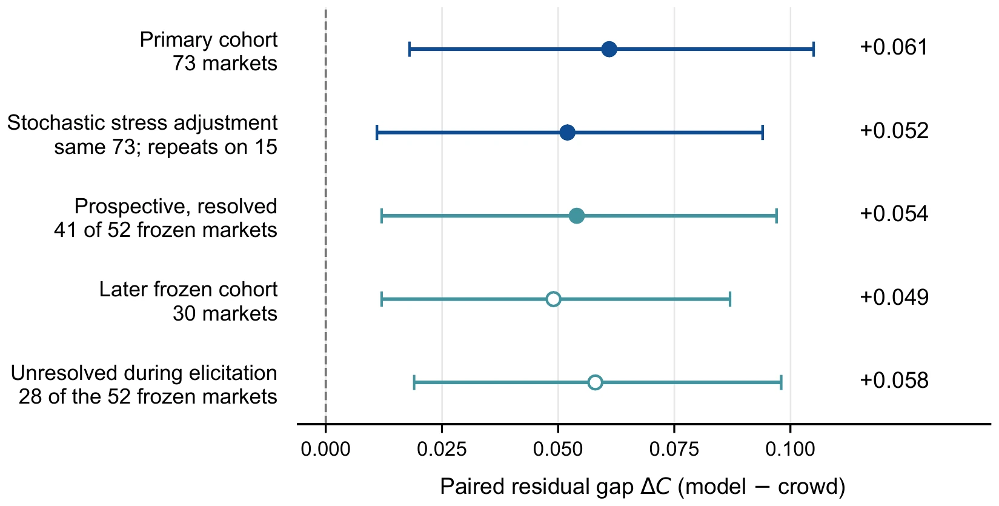
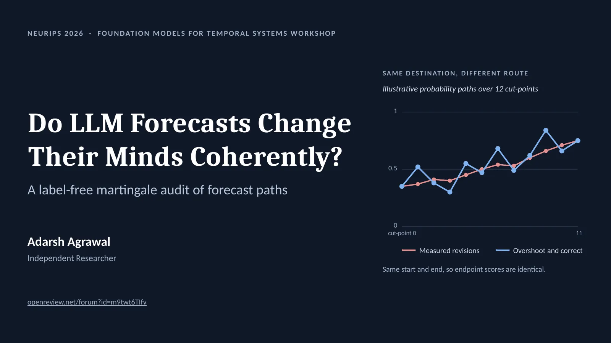
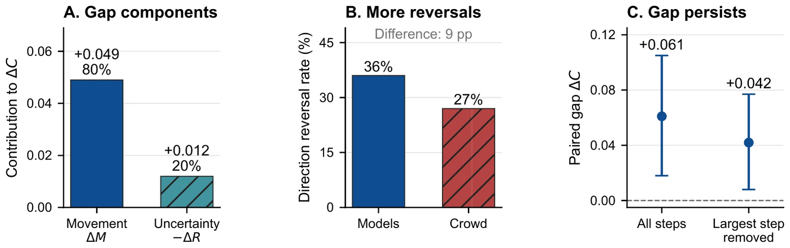
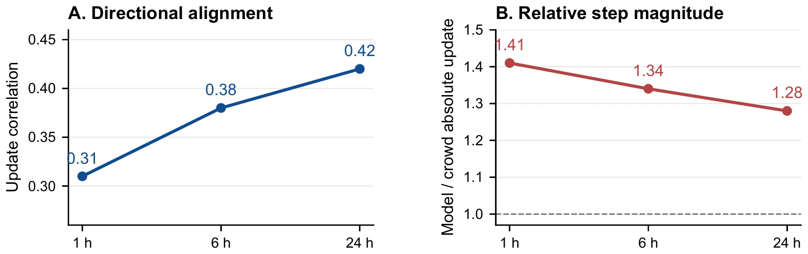

Poster at the NeurIPS 2026 Workshop on Foundation Models for Temporal Systems
Do LLM Forecasts Change Their Minds Coherently?
A coherent forecaster’s probability path moves, in expectation, exactly as much as it resolves uncertainty. LLM forecasters move more. On 73 resolved Polymarket markets, an eight-system panel exceeded the crowd’s martingale residual by +0.061 (95% CI [+0.018, +0.105]), and 80% of that gap is excess movement.

Abstract
Forecasting benchmarks score where a model finishes, not how it gets there. We introduce a martingale audit of the full probability path. Under coherent Bayesian updating, expected squared movement M equals expected uncertainty reduction R, so the residual C = M − R has mean zero and requires neither the outcome nor intermediate probability labels. On 73 resolved Polymarket markets across 21 topics, an eight-system LLM panel shows a model–crowd residual gap of +0.061 (95% CI [+0.018, +0.105]; Wilcoxon p = 3.7 × 10−6). Excess movement accounts for 80% of the gap, and the gap persists when both endpoints are matched (+0.048). A headline-only baseline given identical evidence stays near zero (C = +0.008), ruling out the headline channel alone as an explanation. The result holds under equal topic weighting, wild-cluster and jackknife inference, a stochastic elicitation stress test, and on 41 prospectively frozen markets (+0.054). LLM paths reverse direction more often than the crowd (36% versus 27%), and the gap shrinks with external capability (−0.024 per tier). Path coherence exposes revision behavior that endpoint scores miss.
Key findings
- +0.061
Model − crowd gap in the martingale residual on 73 resolved markets in 21 topics (95% CI [+0.018, +0.105]; Wilcoxon p = 3.7 × 10−6). All eight systems show a positive mean gap.
- 80%
Share of the gap due to excess movement (ΔM = +0.049); weaker uncertainty resolution adds the other +0.012. When model and crowd start and finish within 0.05 of each other, the gap is still +0.048.
- 36% vs 27%
Share of transitions that reverse direction, models against the crowd (permutation p = 0.004). Removing each path’s largest revision, with endpoints fixed, leaves a gap of +0.042.
- +0.008
Residual of a headline-only baseline that sees the same nested headlines, close to the martingale benchmark. The LLM panel exceeds it by +0.053, so the headline channel alone does not explain the gap.
- +0.054
Gap on 41 resolved markets from a cohort frozen before resolution, in line with the retrospective estimate.
- −0.024 per tier
Change in the gap per capability tier (95% CI [−0.041, −0.008]), in the same direction within every provider: within this fixed panel, stronger systems sit closer to the crowd.
Talk slides

The audit
Score a forecast only at the end and you miss how it got there. The audit scores the whole path. For probabilities p0, …, pK on a fixed grid, it compares how far the forecast travels with how much uncertainty it resolves:
M = Σk (pk − pk−1)2 R = p0(1 − p0) − pK(1 − pK) C = M − R
If each probability is the posterior given a growing information set, then E[M] = E[R], so E[C] = 0. The residual needs neither the outcome nor intermediate probability labels, so it can run before a question resolves. It is a moment condition: a single positive C is not a violation, and a mean near zero is necessary, not sufficient.
Models and the crowd are scored on the same grid: 73 binary Polymarket markets in 21 topics, 12 cut-points from creation to a fixed horizon, and at each cut-point every dated headline available so far. Calls are stateless, with no crowd prices or prior outputs, at temperature 0. The eight systems come from OpenAI, Anthropic, and Amazon in efficient, balanced, and flagship tiers, and the panel was fixed before any residual was computed.
Excess movement drives the gap
The gap decomposes exactly as ΔC = ΔM − ΔR. Models travel farther than the crowd (ΔM = +0.049) and resolve slightly less (−ΔR = +0.012), so movement carries 80% of the gap. Model paths also reverse direction more often: 36% of transitions against 27%. Removing each path’s single largest squared revision still leaves +0.042, so one big jump does not explain the result.

Alignment improves, but steps stay larger
Across 784 headline–market pairs, model and crowd updates point in increasingly similar directions as the window widens, with correlations of 0.31, 0.38, and 0.42 at 1, 6, and 24 hours. LLM steps stay larger throughout: the mean absolute update is 1.41, 1.34, and 1.28 times the crowd’s.

Scope and limitations
- Comparative, not causal
- Traders may use private signals. The headline baseline and endpoint matching narrow this difference in information sets but do not eliminate it.
- One platform, fixed panel
- Polymarket only, with eight fixed systems. The Chatbot Arena Elo used to define tiers is not a forecasting benchmark.
- Decoding
- Temperature 0 is operationally deterministic, not guaranteed identical across providers, and the stress test is not a universal noise ceiling.
- A process check, not a target
- A forecaster that never revises attains C = 0 while ignoring evidence. Read the residual alongside calibration, accuracy, responsiveness, and regression-based martingale tests.
Reproducibility
The paper describes a planned release (Appendix F) of the market manifest, prompts, headline snapshots, all 657 attempted primary-panel-plus-anchor paths, and analysis code for the paired estimators, bootstrap intervals, regressions, and sensitivity tables.
Cite this paper
@inproceedings{agrawal2026martingaleaudit,
title={Do LLM Forecasts Change Their Minds Coherently?},
author={Agrawal, Adarsh},
booktitle={NeurIPS 2026 Workshop on Foundation Models for Temporal Systems: From Forecasting to World Modeling},
year={2026},
url={https://openreview.net/pdf?id=m9twt6TIfv}
}